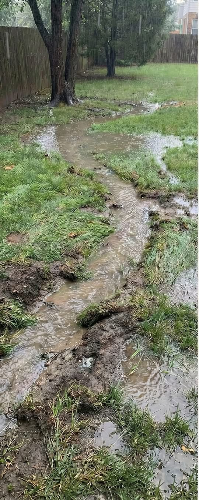
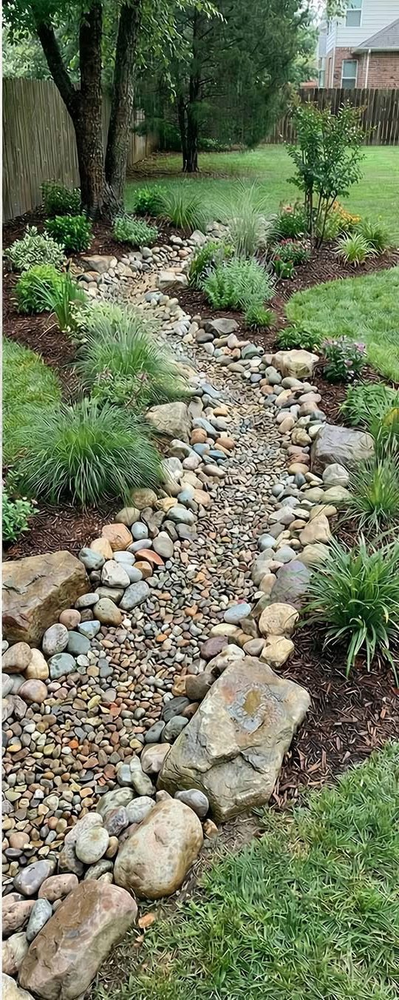

Landco Development LLC helps fix soggy yards, pooling water, erosion, and drainage problems with practical grading and drainage solutions that move water away from your home and property.
Call or Text NowWater stays in the yard long after a rain and leaves wet, muddy, unusable areas.
Pooling water around the house can create drainage and moisture concerns that should be corrected quickly.
Fast-moving runoff can cut through your yard, damage landscaping, and wash away soil.
If the yard does not slope correctly, water can collect in low spots instead of draining away.
Hard ground can prevent water from soaking in and force runoff to sit on the surface.
Depressions in the landscape often hold water and stay soft long after rain ends.
Roof runoff, slope issues, or blocked drainage paths can all force water where it should not go.
The right fix depends on the property, slope, and water pattern.
Real drainage work and real field results.


Call or text for a fast consultation on yard drainage, grading, or erosion problems.
Phone: 912-254-1918
Email: landcodevelopment2@gmail.com
Call or Text Now